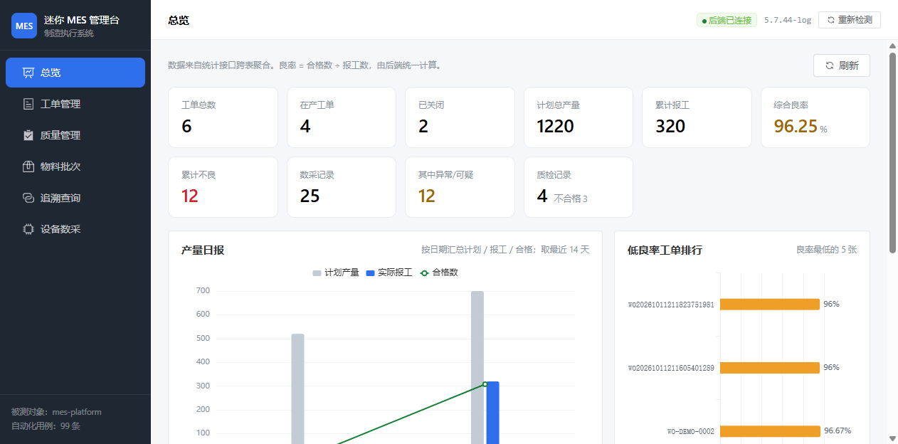
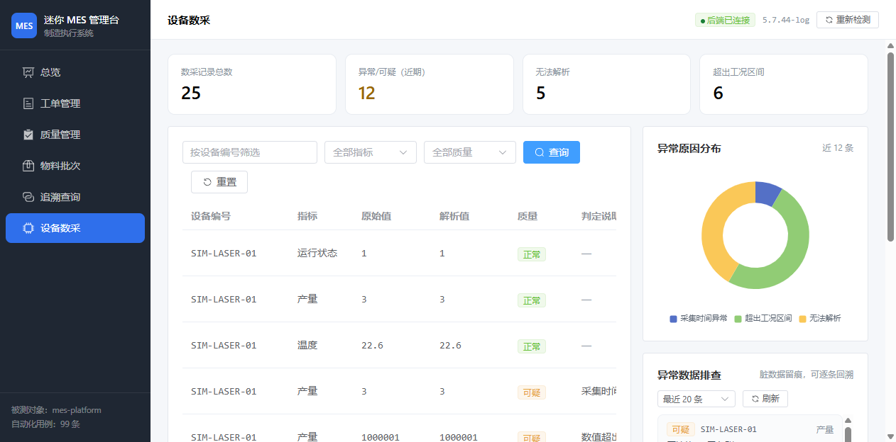

MES 自动化测试平台
面向制造执行系统场景的自动化测试实践项目。由被测系统、测试框架、设备模拟器与管理界面四部分构成， 覆盖业务规则约束、接口自动化、工业协议接入与持续集成四条技术线。
01项目概况
项目规模与关键指标，数据均取自实际运行结果。
02项目缘起
项目的选题来自一个具体问题域，而非通用技术练习。
问题背景
制造现场的一张生产订单依次经过下单、派工、报工、质检、追溯、关闭六个环节。MES 承担这条链路的记录与约束职责， 同时接收设备侧上报的产量、温度等工艺数据。这条链路区别于普通业务系统的特征是：数据一旦写错，事后追溯成本极高。
报工数量与合格数量不守恒时，良率统计与成本核算同步失真；原料批次绑定到错误工单后，出现质量问题无法定位来料来源。 这类错误的共同点是发生时没有报错，只在数天甚至数周后的报表里以异常数字浮现。
目标一：规则前置为代码约束
把业务规则写成可执行的校验，使非法数据在入口处即被拒绝，而不是依赖人工在报表阶段发现。
目标二：规则由自动化用例保障
用用例覆盖每一条规则，使规则被改动破坏时能在提交阶段被发现，而非等到上线后暴露。
03工程构成
四个工程按职责分离，避免单体内聚合导致的断言失去外部参照。
被测系统。迷你 MES 后端，覆盖工单、报工、质检、物料追溯、设备数采五条业务线，含 6 张表与 24 个接口路径。
M1 完成
测试框架。pytest + requests + PyMySQL，99 条用例，关键用例采用接口返回与落库双向断言。
M2 完成
设备模拟器。以 Modbus TCP 模拟产线设备，上报数据并提供六种故障注入，用于验证质量把关有效性。
M4 完成
管理界面。Vue 3 + Element Plus，将 24 个接口组织为六个可视化操作页面。
M4 完成
04架构与数据流
四个工程围绕被测系统形成单向依赖，系统内部运行三条独立数据链路。
工程依赖关系
被测系统是架构枢纽，其余三个工程均以它为依赖终点。三者之间不存在依赖关系，可独立启停。
三条数据链路
| 链路 | 触发方 | 写入库 | 数据留存 |
|---|---|---|---|
| 业务主链路 建单→派工→报工→质检→关闭 |
人工操作或接口调用 | mes |
留存，属真实业务数据 |
| 设备数采链路 采集器轮询 Modbus 后上报 |
采集器周期轮询 | mes |
留存，异常数据一并留痕 |
| 测试验证链路 调用接口造数并双向断言 |
pytest 或 CI 触发 | mes_test |
不留，执行结束清场 |
业务主链路的双写
每完成一步业务操作，系统同时执行两个写入：更新业务表，以及追加一条追溯流水记录。 追溯表只新增不修改，因此链路回看结果可信，这是追溯查询页面能够还原完整时间线的基础。
_test 结尾，并交叉验证接口实际写入的库与框架回查的库为同一实例。
缺少这层校验时，用例会跑完全部 99 条再报出大量难以定位的假失败。
05数据模型
六张表，按业务域划分，覆盖订单执行链路与设备数据入口。
| 表名 | 职责 | 关键约束 |
|---|---|---|
| mes_work_order | 工单主表，记录计划数量、累计报工、状态流转时间 | 计划数量上限 1000000；状态机受约束 |
| mes_work_report | 报工流水，工单下的一笔笔产量记录 | 合格数 + 不良数 = 报工数；累计不超计划 |
| mes_quality_inspection | 质检记录，含检验类型、数量与不良代码 | 结论由数量推导；有不良时不良代码必填 |
| mes_material_batch | 物料批次，记录来源、数量与绑定工单 | 一个批次仅允许绑定一个工单 |
| mes_trace_record | 追溯流水，记录各环节节点 | 只增不改，保证链路可回看 |
| mes_device_data | 设备数采记录，含原始串、解析值与质量标记 | 不合格数据保留原始串；不可解析的不入账 |
06接口清单
24 个接口路径，按统一响应约定返回，可按模块筛选或搜索。
统一响应约定
所有已路由至 Controller 的请求均返回 HTTP 200，业务结果由 code 字段承载。
这一约定使测试脚本可以使用同一套断言模板处理全部接口。
| HTTP | 含义 | 出现场景 |
|---|---|---|
| 200 | 请求已到达业务层 | 成功、参数校验失败、业务规则拒绝、业务语义的资源不存在 |
| 404 | 路由或静态资源不存在 | 请求未匹配到任何接口 |
| 500 | 未预期异常 | 代码缺陷，凭 traceId 检索日志 |
业务状态码：0 成功 40000 参数校验失败 40400 资源不存在 40900 状态冲突 40901 数据已存在 50000 系统内部错误 50300 依赖不可用
traceId 同时写入响应头 X-Request-Id，调用方自带该请求头时原样沿用，
便于将一次执行产生的多条请求日志串联起来。
| 方法 | 路径 | 说明 |
|---|
07业务规则
规则是测试用例设计的蓝本，也是被测系统的约束边界。
① 工单状态机
- 仅
DISPATCHED与IN_PROGRESS允许报工，NEW与CLOSED一律返回 40900。 NEW状态不允许关闭；CLOSED状态不可重复关闭。
② 数量守恒
合格数与不良数之和必须等于报工数，质检同理。两者均不传时按全部合格处理，仅传其一则自动推算另一值。
累计报工数超过计划数时直接返回 40900 拦截，不放过超报。
③ 质检结论推导
结论由数量推导，不接受人工指定相反结论：不良数大于 0 即判定为 FAIL。
存在不良时必须填写 defectCode，否则追溯链在不良环节断裂。
④ 批次绑定约束
一个批次只允许绑定一个工单，重复绑定时返回 40900，防止追溯串线。
状态为 CONSUMED 的批次不可再绑定或重复出货。
⑤ 数采数据的三层质量把关
设备上报的 rawValue 声明为字符串类型而非数值。现场设备上报畸形数据属于常态，
入口不做类型强转，由业务层判定质量等级后落库。
⑥ 并发下的数量正确性
报工、派工、关闭等会修改工单数量的操作均在事务内先对工单行加锁（SELECT ... FOR UPDATE），
再读取当前累计值并校验，避免两个并发报工请求同时通过超报校验。
该实现覆盖单机场景，分布式部署时需要补充其他机制。
08测试设计
99 条用例，按被测对象的能力边界分层，采用四类设计手法。
| 模块 | 条数 | 设计意图 |
|---|---|---|
| 服务自检 | 3 | 环境与契约正确性，作为其余用例的前置条件 |
| 工单主链路 | 1 | 端到端流程贯通，验证模块间协作 |
| 工单业务规则 | 36 | 单条规则的正向、反向与边界覆盖 |
| 质量检验规则 | 19 | 结论推导的正确性与必填约束 |
| 物料批次与追溯 | 10 | 状态流转与防串线约束 |
| 设备数采质量 | 24 | 三层质量把关的判定准确性 |
| 统计报表 | 6 | 聚合口径与筛选条件正确性 |
| 合计 | 99 | 冒烟 10 条 · 回归 89 条 · 需落库校验 60 条 |
四类设计手法
等价类划分
数量守恒规则中，「合格数 + 不良数 = 报工数」为合法类，「两者之和小于报工数」「大于报工数」 分别构成两个非法类，各自独立成例，而非只验证其中一种。
边界值分析
带上下限的参数按边界取值：恰好等于下限、恰好等于上限、上限加一、下限减一。 分页参数另外覆盖负数与超出上限的取值。
状态机全覆盖
三条合法迁移路径各有一个正向用例；四条非法迁移（NEW 直接报工、NEW 直接关闭、CLOSED 重复关闭、 CLOSED 再次报工）各有对应的拦截用例。合法路径确保功能可用，非法路径确保约束生效。
数据驱动
同一逻辑、不同输入的场景不重复编写用例方法，改为在 YAML 中追加数据行。 新增同类场景只增加数据，不改动测试代码，也避免了相似用例之间的实现漂移。
接口返回与落库双向断言
接口返回 HTTP 200 只说明请求到达了业务层，不代表数据已正确持久化。
事务未提交、字段映射错误、级联写入遗漏等问题在响应体上都表现为成功。
因此关键用例在断言响应字段之外，另直连 mes_test 回查。
| 校验对象 | 断言内容 |
|---|---|
| 接口响应 | 报工接口应返回状态 IN_PROGRESS，累计报工数为 120 |
| 数据库字段 | mes_work_order.finished_qty 必须为 120 |
| 级联写入 | mes_work_report 中该工单的报工记录条数必须为 1 |
| 追溯节点 | mes_trace_record 中对应的报工节点必须已落库 |
失败信息的完整度
断言失败信息包含完整的现场上下文，含请求方法、URL、响应状态码、业务码、traceId、耗时与响应体。 traceId 与 MES 服务日志中的标识一致，凭此可直接定位到对应的服务端日志片段。
|
[工单报工] 期望业务码 40900，实际 0 message='成功' POST http://127.0.0.1:8080/api/work-orders/WO2026.../reports | HTTP=200 code=0 | traceId=ab6f37e8bdeb4ee8 | 耗时=4ms | body={"code":0,...} |
若失败信息仅输出「期望 40900 实际 0」，排查时需要重新构造请求、复现问题、再翻日志查找， 成本远高于一次断言中带上全部信息。
数据可重复与自动清场
- 唯一编码：所有业务编码携带当轮唯一前缀，重复执行不会撞唯一键，也不覆盖上一轮数据。
- 登记式清场：造出的单号全部登记，会话结束时统一删除，无论用例成败都执行。
- 兜底扫描：按登记单号精确删除后，再按当轮时间窗扫描一次，捞取绕过工厂直接调用接口产生的数据；命中时框架会提示，说明存在需要修正的写法。
- 安全护栏：配置库名不以
_test结尾时直接拒绝执行。
09设备模拟与故障注入
质量把关逻辑只接收正常数据时其分支永远不被执行，故障注入用于验证把关有效性。
工业链路结构
设备不主动推送数据，只负责把值写入寄存器。中间必须存在一层采集程序（现场通常称网关或 SCADA） 周期性读取并转换格式后上报。工程内部因此分为服务端与采集器两个角色，而非让模拟器直接调用接口。
六种故障场景
故障注入分两层，分层依据是协议本身的表达能力而非设计偏好。
| 场景 | 注入层 | 注入内容 | 预期 MES 判定 |
|---|---|---|---|
| temp_overheat | 设备侧 | 温度寄存器置 5120，即 512℃ | 可疑，超出 -50 至 200℃ |
| status_illegal | 设备侧 | 运行状态置 99 | 可疑，超出 0 至 10 |
| sensor_fault | 采集侧 | 上报 #### | 异常，不可解析，数值不入账 |
| garbage_value | 采集侧 | 上报 12x3 | 异常，不可解析，数值不入账 |
| output_over_limit | 采集侧 | 上报 1000001 | 可疑，超出 0 至 1000000 |
| clock_drift | 采集侧 | 采集时间超前 2 小时 | 可疑，判定为设备时钟异常 |
端到端验证覆盖
- 基线：无故障时上报，三种指标均应判为正常。
- 异常识别：逐个注入六个场景，各自应判定出预期的标记与原因，原因文本需命中预设关键词。
- 恢复：撤销注入后再次上报应回到正常状态，证明注入未对后续数据造成残留影响。
- 可追溯：MES 的异常清单应能捞取到本轮注入的数据。
仅验证「上报成功」不足以说明把关有效：全部数据被判正常意味着把关形同虚设， 全部被判异常则意味着阈值设置过严。三种判定结果都需要覆盖。
10管理界面
六个页面将 24 个接口组织为可视化操作入口，同时承担对外演示职责。
页面构成
- 总览：核心指标卡、产量日报图、低良率工单排行、异常数采清单
- 工单管理：建单、派工、报工、关闭，详情抽屉展示报工明细
- 质量管理：质检录入、不良代码分布、按工单查询不良明细
- 物料批次：批次建档、绑定工单、出货消耗
- 追溯查询：正向追溯与反向追溯，以时间线呈现链路
- 设备数采：数采记录、异常原因分布、异常数据逐条排查
三项设计取舍
- 可用操作随状态变化：工单进入已关闭状态后报工按钮不再出现，批次进入已消耗状态后绑定与出货操作同时消失。界面负责引导合法操作，后端负责拦截越界请求。
- 业务规则前置到界面：质检录入时即时显示将推导出的结论；报工时实时校验数量守恒。操作者在提交前即可确认数据合规。
- 状态映射集中维护：英文状态码与中文文案的映射统一收敛到单一模块，避免同一状态在不同位置显示不同名称。
界面预览
截图取自实际运行的界面，数据来自真实接口。

总览：核心指标、产量日报与低良率排行

设备数采：Modbus 模拟器上报的数据，含异常原因分布与逐条排查清单
11持续集成
GitHub Actions 双作业流水线，覆盖接口回归与界面构建。
接口自动化回归作业
- 启动 MySQL 5.7 容器（与本地版本一致）
- 建库建表（mes 与 mes_test）
- 构建被测系统并以 test profile 启动，轮询就绪
- 执行 99 条接口用例，含落库断言
- 设备模拟器自检与端到端验证
- 生成三类报告并回写执行历史
管理界面构建作业
- 安装 Node.js 22 与依赖缓存
- 以
npm ci安装依赖，校验锁文件一致性 - 执行生产构建
- 校验构建产物完整性
前端与后端关注点不同，也不依赖数据库，因此独立为单独作业并行执行。
触发方式
| 事件 | 行为 |
|---|---|
| 推送或拉取请求 | 按路径过滤后全量回归 |
| 手动触发 | 可选全量或仅冒烟 |
| 定时（每日北京时间 06:00） | 全量回归，用于发现环境漂移引起的慢性问题 |
路径过滤范围包含四个工程目录与工作流文件本身。仅修改文档不会触发流水线。
通过率趋势的累积
每轮执行结束后向 history/api-test-history.jsonl 追加一条记录，该文件随仓库提交。
趋势的价值来自跨轮次、跨机器的累积，因此记录必须持久化——CI 产生的记录若仅存于 artifact 中，
30 天后随 artifact 过期消失，趋势累积在 CI 侧实际不成立。
记录中同时保留带时区偏移的时间戳与北京时间两个字段。CI runner 使用 UTC，本地使用 UTC+8， 仅按本地时间字符串排序会把 CI 记录排到最早，因此排序依据采用带偏移的字段。
12进度与边界
里程碑完成情况与当前能力边界。
| 阶段 | 内容 | 状态 |
|---|---|---|
| M1 | 迷你 MES 后端，6 张表、24 个接口路径 | 完成 |
| M2 | pytest 框架与 99 条用例，含落库双向断言 | 完成 |
| M3 | GitHub Actions 回归、Allure 报告、通过率趋势 | 完成 |
| M4 | Modbus TCP 设备模拟器、Vue 管理界面 | 完成 |
| M5 | 性能压测与消息队列 | 规划中 |
验证结果
能力边界
| 方面 | 当前状态 |
|---|---|
| 并发设计 | 未做高并发设计。并发正确性依靠工单行锁（FOR UPDATE）保证，未引入分布式锁 |
| 设备接入 | 未接入真实产线设备，设备侧由 Modbus 模拟器提供；协议实现仅覆盖功能码 3 |
| 认证授权 | 尚未实现，接口与管理界面均为开放访问 |
| 用例执行 | 按顺序执行设计，不支持多轮并发执行，清场逻辑的时间窗兜底基于该假设 |
| 性能与消息 | 未做压测，未引入消息队列，规划在 M5 |